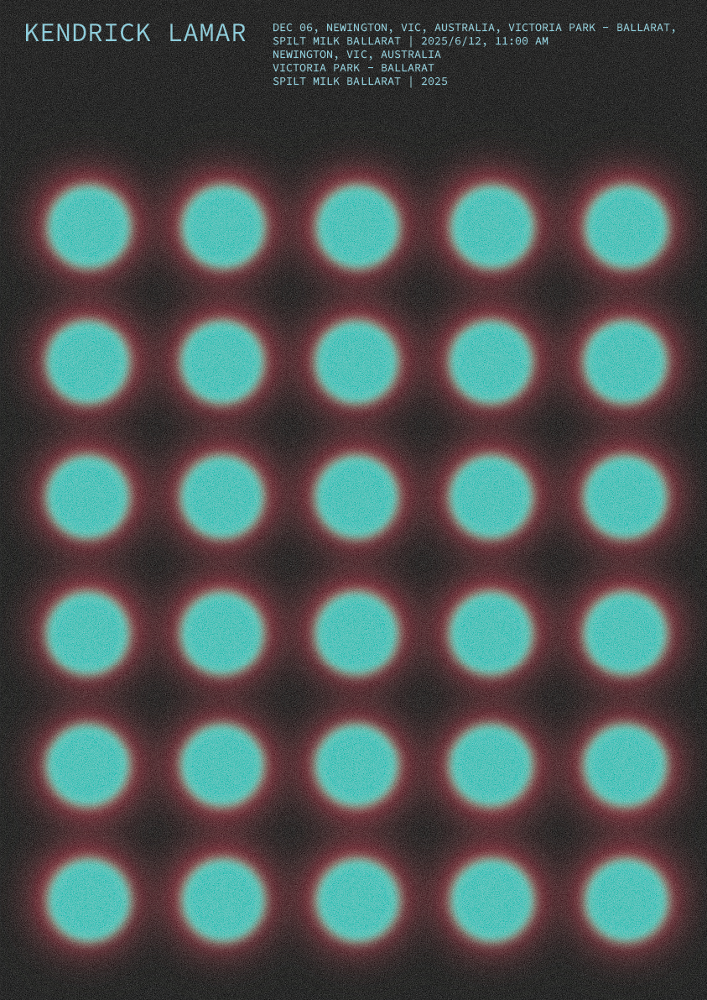
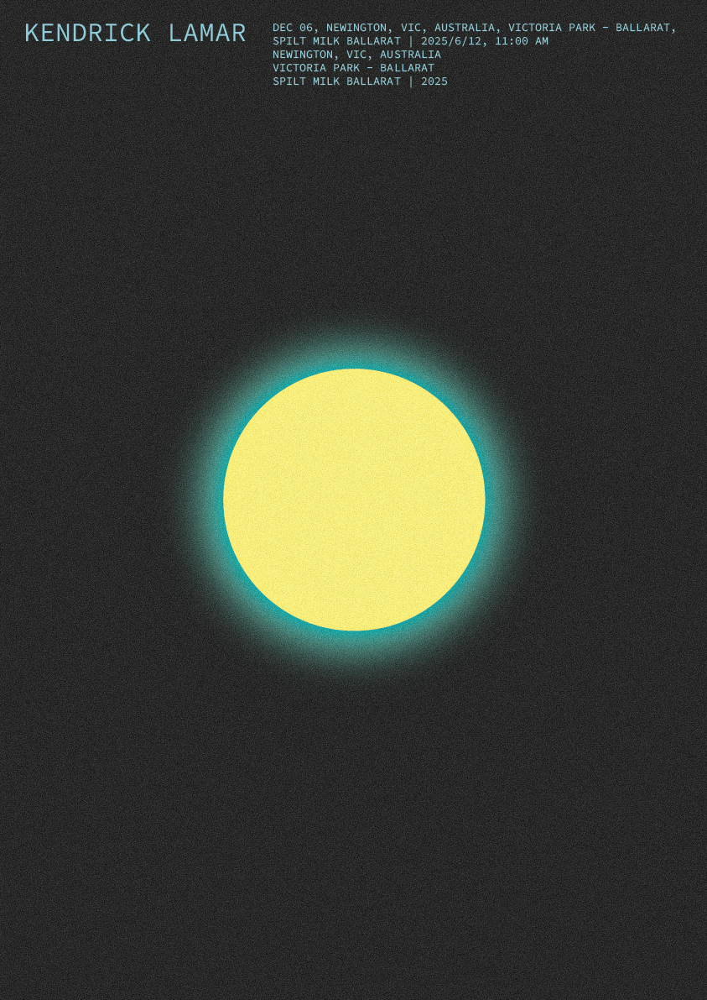
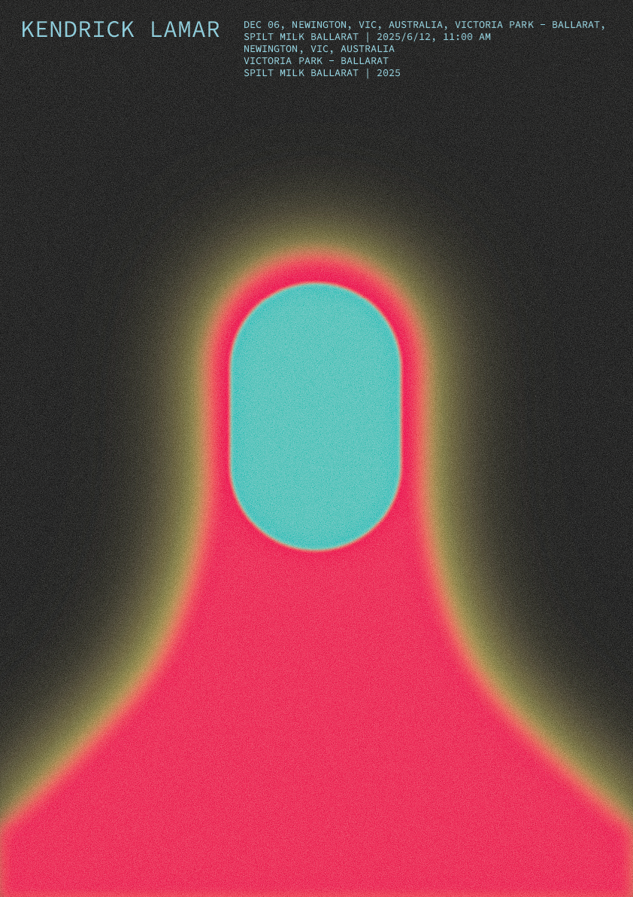
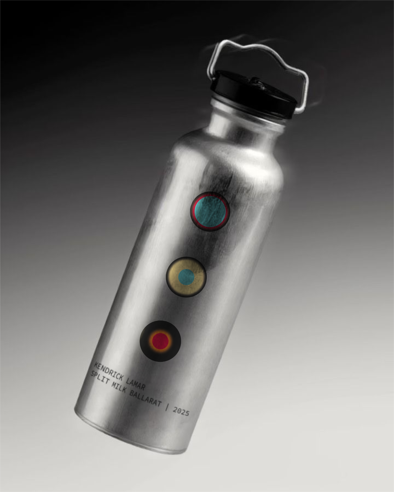
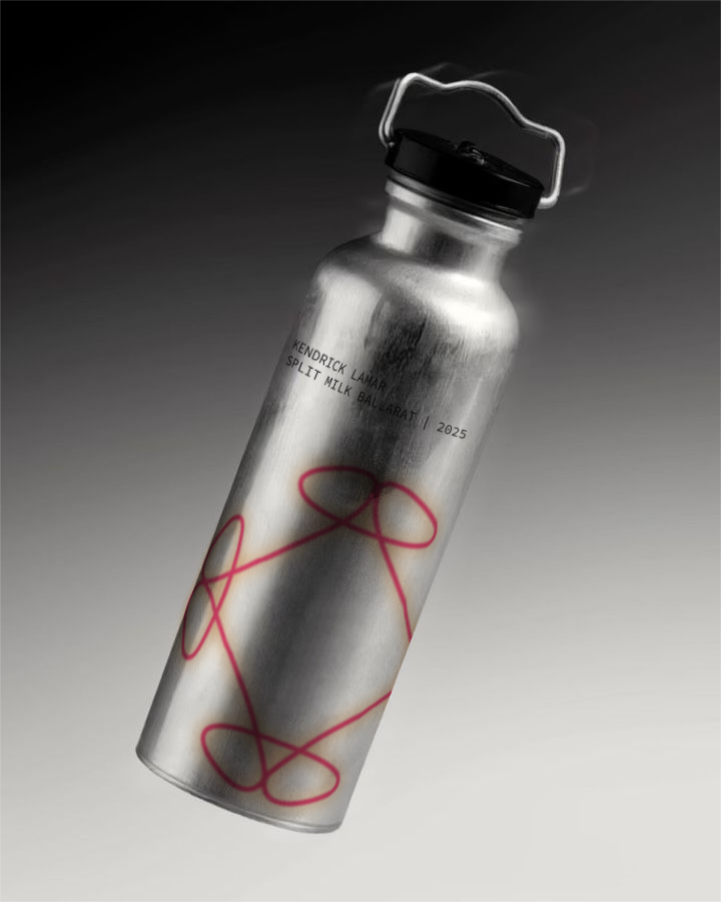
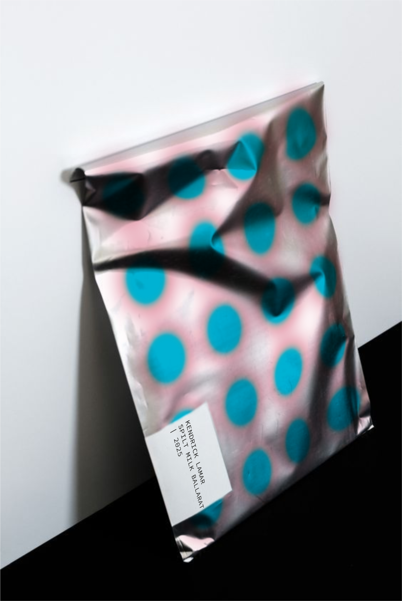
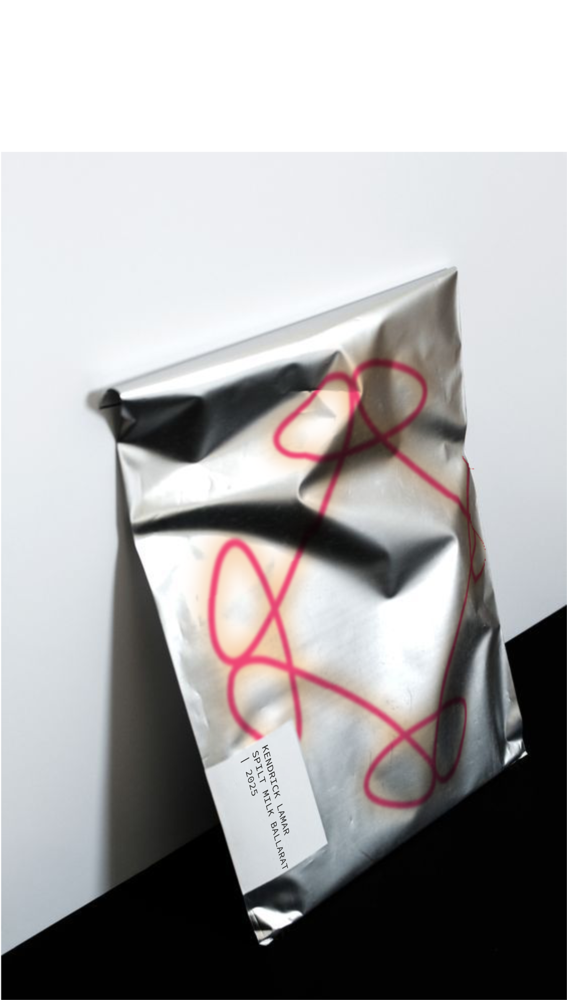
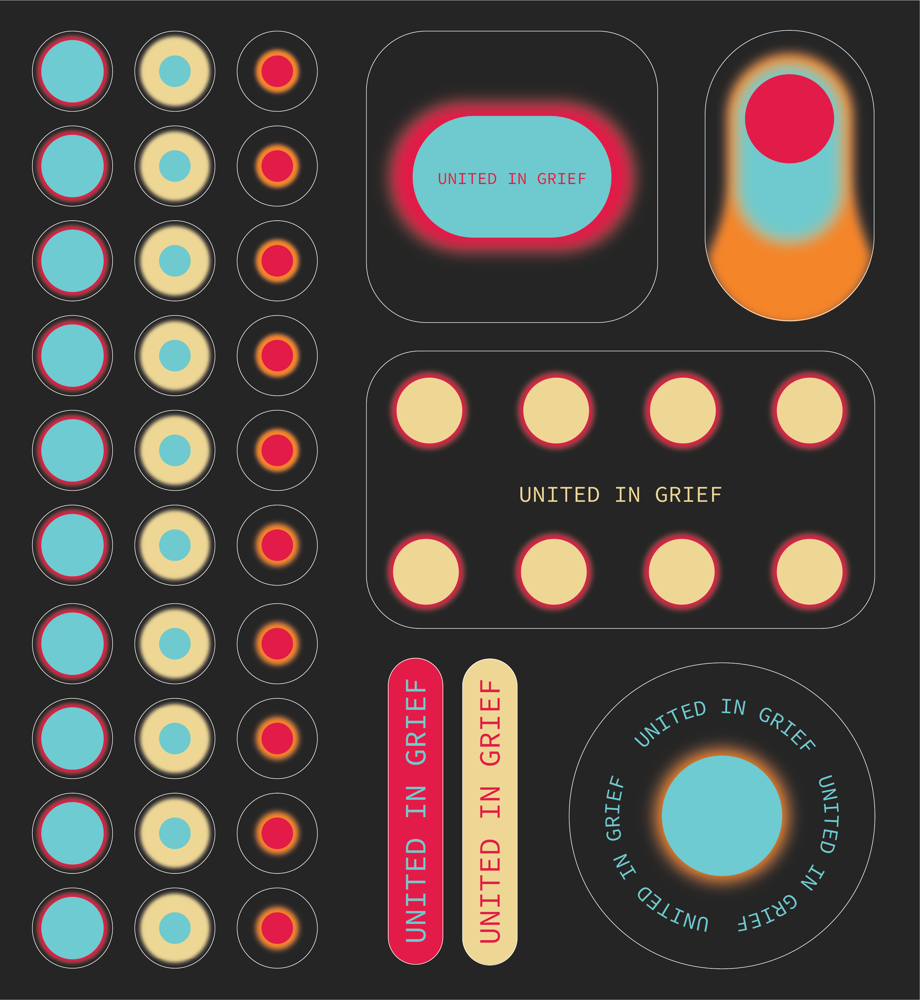
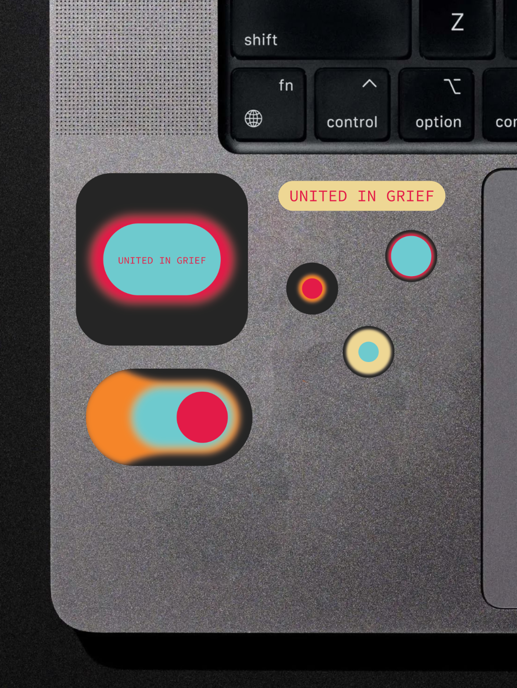
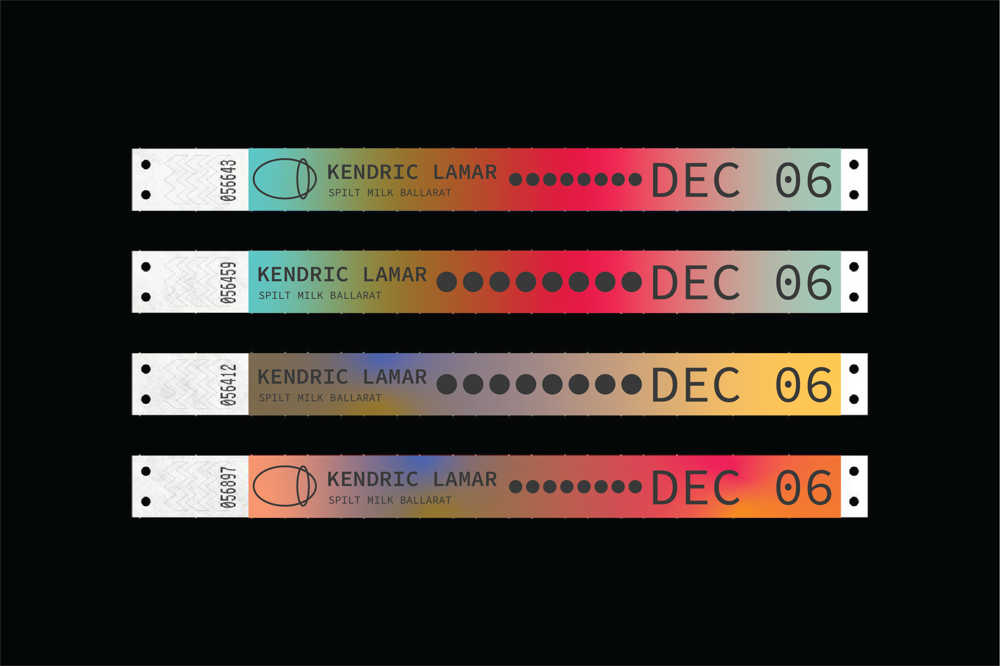

For this project, I developed an identity for Kendrick Lamar’s song “United in Grief”, exploring how abstract shapes can visualise sound. The aim was to convey the mood and dynamics of the track through colour, movement and composition.



The visual system combines gradients, fluid shapes and rhythmic elements to evoke a continuous flow of sound. Animation, posters, social media announcements and merchandise all share the same visual concept.
From the outset, I wanted to build the project’s visual language around colour and transitions of light, which I associated with the sound of the track. I explored the interplay of abstract shapes, gradients and motion to convey the rhythm and emotional character of the music.
The individual elements gradually came together as a cohesive identity that works across digital animation, social media, print and merchandise.
Tools: Adobe After Effects, Adobe Illustrator, Adobe Photoshop






